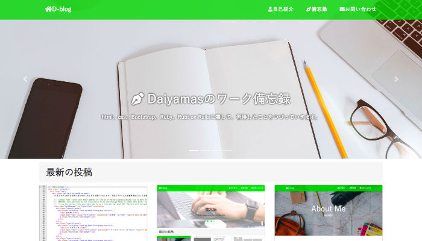
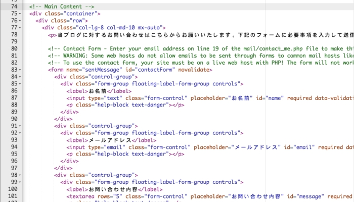
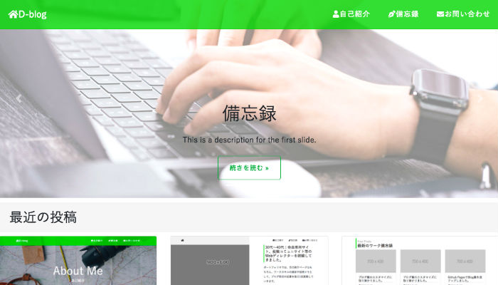
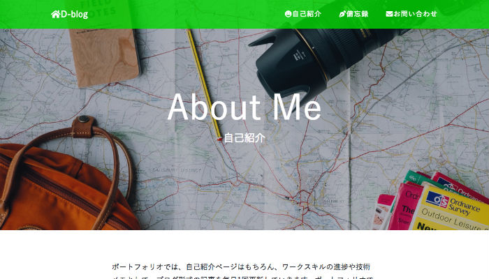
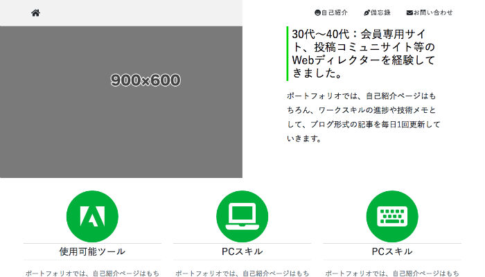

最新の投稿

D-POSTをカスタマイズしてみることにしました。
今回の目的は、D-postをTwitterのPC版ページの要素を加えたイメージまでカスタマイズすることです。

各ページの要素がほぼ確定しました。
昨日発生したGoogle code-prettifyの不具合は、当初使用していたhighlight.jsでの 実装に戻すことで解消されました。

お問い合わせページの設定に取り掛かりました。
1ベースに使用しているテーマ「Claen Blog」の中ではcontact.htmlとcontact_me.phpと contact_me.jsの3ファイルで構成されています。

TOP、投稿一覧のフォーマットをほぼ固めました。
1ページビューか4ページ構成かの折衷案として、トップページから各ページへのジャンプは、 navbarとスライダー画像の両方へリンク設定を行うことにしました。

AB案で比較検討してみた結果。
本ブログのように、構成要素が少ないサイトを構築する際、1ページビューで該当する コンテンツをスクロールさせて表示する手法が考えられます。

自己紹介用のコンポーネントを追加してみました。
ベースに使用しているBootstrapテーマ「Clean Blog」は、 キービジュアル上に太いフォントの見出しを配置するレイアウト設定がされていました。